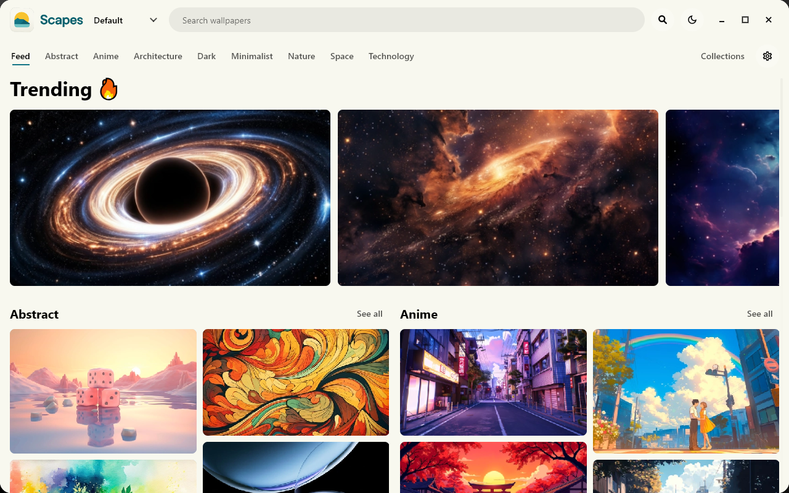
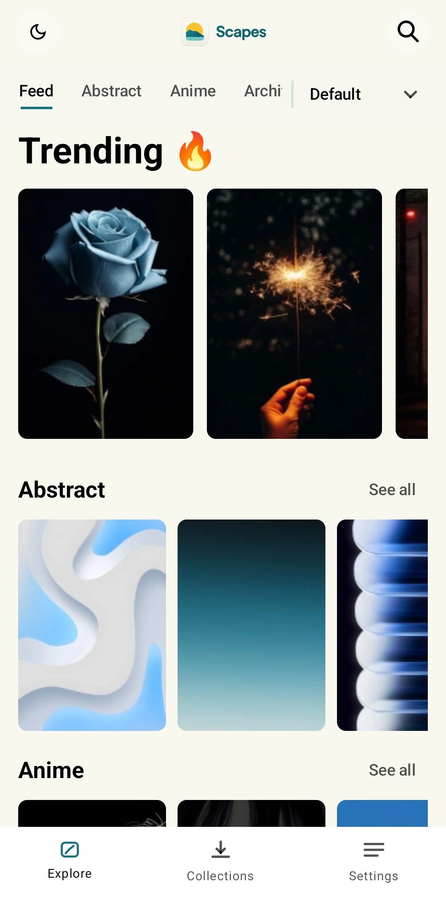

Scapes simplifies your workflow, eliminating desktop clutter and saving you time while discovering breathtaking art.
Instantly set any image as your wallpaper with a single click. No more saving, finding, and applying manually.
Say goodbye to hoarding. Scapes automatically categorizes and stores your downloaded wallpapers into neat folders.
Explore trending categories and get smart search recommendations driven by a community of creators and users.
From discovery to a freshly dressed screen, in three effortless steps.
Search and browse curated wallpapers, with smart recommendations tailored to your taste.
Set any wallpaper to your desktop or mobile device in a single click. No downloads to manage.
Your folder stays neatly organized automatically, ready whenever you want a change of scenery.
A constantly refreshed library of styles, curated for both desktop and mobile.


Join the Scapes Contributor platform. Share your masterpiece with thousands of users worldwide.
Join as Contributor